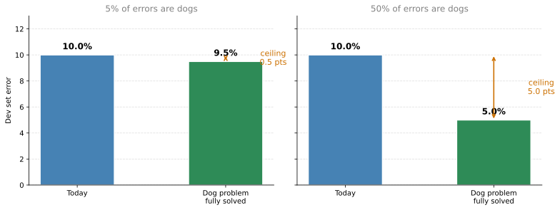
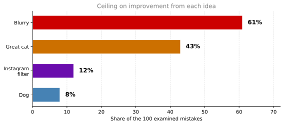

Error Analysis
deep-learning
ml-strategy
error-analysis
Counting mistakes by category to decide what to work on next, deciding when incorrect labels are worth fixing, and why the first system should be quick.
If you are trying to get a learning algorithm to do a task that humans can do, and your algorithm is not yet at the performance of a human, then manually examining the mistakes it makes can give you insights into what to do next. That process is called error analysis, and it is the subject of this page.
Carrying Out Error Analysis
Suppose you are working on a cat classifier and you have achieved 90 percent accuracy, or equivalently 10 percent error, on your dev set. That is much worse than you were hoping for. One of your teammates looks at some of the examples the algorithm is misclassifying and notices that it is miscategorizing some dogs as cats. Looking at those dogs, maybe they do resemble a cat at first glance.
So your teammate comes to you with a proposal for making the algorithm do better specifically on dogs. You could imagine a focused effort to collect more dog pictures, or to design features specific to dogs, so that the classifier stops mistaking them for cats. The question is whether you should go ahead and start a project focused on the dog problem.
There could be several months of work involved in making your algorithm produce fewer mistakes on dog pictures. Rather than spending those months only to risk finding out at the end that it was not that helpful, there is a procedure that tells you very quickly whether the effort is worth it.
Get about 100 mislabeled dev set examples, then examine them manually. Count them one at a time to see how many of those mislabeled examples are actually pictures of dogs.
Suppose it turns out that 5 percent of your 100 mislabeled dev set examples are dogs. Then out of a typical set of 100 examples you get wrong, even if you completely solve the dog problem, you get only 5 more of them correct. Your error goes from 10 percent down to 9.5 percent, which is a 5 percent relative decrease. You might reasonably decide that this is not the best use of your time.
Now suppose instead that when you look at those 100 mislabeled examples, 50 of them are dogs. Now you can be much more optimistic about spending time on the dog problem, because solving it would take your error from 10 percent down to potentially 5 percent. Halving your error could well be worth a lot of effort.
In machine learning this is sometimes called the ceiling on performance, meaning the best you could possibly do by working on that one problem. Counting 100 examples is maybe a 5 to 10 minute effort, and depending on whether the answer comes out closer to 5 percent or 50 percent, those few minutes tell you how worthwhile the direction is. That is a much better basis for deciding whether to spend the next few months on dogs than intuition is.
Machine learning practitioners sometimes speak disparagingly of hand engineering things or relying too much on human insight. But when you are building applied systems, this simple counting procedure can save you a great deal of time.
Evaluating Multiple Ideas in Parallel
Error analysis is not limited to a single idea. Suppose you have several ideas for improving your cat detector. Maybe you can improve performance on dogs. Maybe you have noticed that great cats, such as lions, panthers, and cheetahs, are being recognized as house cats. Maybe some of your images are blurry and it would be nice to design something that works better on blurry images.
To evaluate these three ideas, create a table. A spreadsheet works well, and an ordinary text file is fine too. The rows go through the set of images you plan to look at manually, so 1 through 100 if you are looking at 100 pictures. The columns correspond to the ideas you are evaluating. Leave space for comments, because writing down what each image actually was helps you remember them.
Remember that during error analysis you are looking only at dev set examples that the algorithm got wrong. If the first misrecognized image is a dog, put a check mark in the dog column and note in the comments that it was a pit bull. If the second is blurry, mark that. If the third is a lion on a rainy day at the zoo, it belongs to both the great cat and the blurry categories, so mark both and note the rain in the comments.
| Image | Dog | Great cat | Blurry | Instagram filter | Comments |
|---|---|---|---|---|---|
| 1 | ✓ | Pit bull | |||
| 2 | ✓ | ||||
| 3 | ✓ | ✓ | Lion, rainy day at zoo | ||
| … | |||||
| 100 | ✓ | ✓ | |||
| Percentage | 8% | 43% | 61% | 12% |
Having gone through the images, count what percentage of them fall into each error category, which just means going down each column and counting the check marks. Notice that the percentages add up to well over 100, because a single image can belong to more than one category, as the lion in the rain did.
Part way through this process you will sometimes notice categories of mistakes you had not anticipated. For example, you might find that Instagram-style filters, those fancy image filters, are also confusing your classifier. It is perfectly fine to add a new column part way through, go back over the images, and count that category as well.

The conclusion of this process is an estimate of how worthwhile it might be to work on each category. In this example a lot of the mistakes were made on blurry images and quite a lot on great cats. The outcome is not that you must work on blurry images. This gives you no rigid mathematical formula telling you what to do, but it does give you a sense of the best options to pursue.
It also tells you what you would be giving up. No matter how much better you do on dog images or on Instagram images, you improve performance by at most 8 percent or 12 percent of your errors. On great cats or blurry images the ceiling is much higher. So depending on how many ideas you have for each, you might pick one of the two, or if you have enough people on your team, you might have one group work on great cats while a different group works on blurry images.
To summarize, carrying out error analysis means finding a set of mislabeled examples in your dev set, looking at those examples for both false positives and false negatives, and counting how many errors fall into each category. During the process you may be inspired to create new categories, as happened with the Instagram filters. Counting the fraction of examples that fail in each way is what lets you prioritize, and it often suggests new directions as well.
Review Questions
1. Your cat classifier has 10 percent dev set error. You examine 100 misclassified dev set images and find that 5 of them are dogs. What is the most you can gain by solving the dog problem, and what should you conclude?
TipAnswer
At most you go from 10 percent error to 9.5 percent, a relative improvement of 5 percent. That number is the ceiling on performance for this idea. Since several months of work would buy half a percentage point, this is probably not the best use of the time, and 10 minutes of counting was enough to establish that.
1. Why do the category percentages in the error analysis table add up to more than 100 percent?
TipAnswer
Because a single misclassified image can fall into several categories at once. The lion photographed on a rainy day at the zoo counts as both a great cat and a blurry image, so it puts a check mark in two columns. The columns are not mutually exclusive, which also means the ceilings they imply cannot simply be added together.
1. Part way through examining 100 mistakes you notice that Instagram-style filters are confusing the classifier, which was not one of your original three categories. What should you do?
TipAnswer
Add a new column for that category, go back over the images you have already examined, and count it like the others. Discovering categories you did not anticipate is one of the main benefits of looking at the data by hand, so the table is meant to grow during the process rather than be fixed in advance.
Cleaning Up Incorrectly Labeled Data
The data for a supervised learning problem comprises input \(x\) and output labels \(y\). What if, going through your data, you find that some of those labels are wrong? Is it worth your time to fix them?
First, some terminology. Mislabeled examples are ones where your learning algorithm outputs the wrong value of \(y\). Incorrectly labeled examples are ones where the label in your dataset, whatever a human labeler assigned to that piece of data, is itself wrong. In the cat classification problem, \(y = 1\) for cats and \(y = 0\) for non-cats, so an image of a dog carrying the label \(y = 1\) is an incorrectly labeled example. The labeler simply got that one wrong.
Incorrect Labels in the Training Set
Deep learning algorithms are quite robust to random errors in the training set. As long as the errors are not too far from random, perhaps because the labeler was not paying attention or accidentally hit the wrong key, it is probably fine to leave them alone and not spend much time fixing them. There is certainly no harm in going into your training set, re-examining the labels, and fixing them, and sometimes that is worth doing. But you will likely be fine even if you do not, so long as the total dataset is big enough and the actual percentage of errors is not too high. Plenty of machine learning systems train successfully even when everyone knows there are a few mistakes in the training labels.
There is one important caveat. Deep learning algorithms are robust to random errors but they are much less robust to systematic errors. If your labeler consistently labels white dogs as cats, that is a real problem, because your classifier will learn to classify all white dogs as cats. Random or near-random errors are usually not too bad, but a consistent bias in the labeling gets learned faithfully.
Incorrect Labels in the Dev and Test Sets
If you are worried about the impact of incorrectly labeled examples on your dev or test set, add one extra column to your error analysis table so that you can also count the examples where the label \(y\) was wrong.
Suppose you count up the impact on 100 mislabeled dev set examples, meaning 100 examples where your classifier output disagrees with the label in your dev set. For a few of those, the classifier disagrees with the label because the label is wrong rather than because the classifier is wrong. Maybe the labeler missed a cat in the background of one image, so it gets a check mark in the new column. Maybe another image is a drawing of a cat rather than a real cat, and you would have wanted the labeler to assign \(y = 0\) instead of \(y = 1\), so that gets a check mark too.
| Image | Dog | Great cat | Blurry | Incorrectly labeled | Comments |
|---|---|---|---|---|---|
| … | |||||
| 98 | ✓ | Labeler missed a cat in the background | |||
| 99 | ✓ | ||||
| 100 | ✓ | Drawing of a cat, not a real cat | |||
| Percentage | 8% | 43% | 61% | 6% |
Now the question is whether it is worthwhile to go in and fix that 6 percent of incorrectly labeled examples. The advice is that if it makes a significant difference to your ability to evaluate algorithms on your dev set, then go ahead and spend the time. If it does not make a significant difference to that ability, then it might not be the best use of your time.
Three numbers help you decide. Look at the overall dev set error, at the percentage of that error due to incorrect labels, and at the percentage due to all other causes.
| Example on the left | Example on the right | |
|---|---|---|
| Overall dev set error | 10% | 2% |
| Errors due to incorrect labels | 0.6% | 0.6% |
| Errors due to all other causes | 9.4% | 1.4% |
| Share of errors from incorrect labels | 6% | 30% |
In the example on the left, your system has 90 percent overall accuracy, so 10 percent error, and 6 percent of those errors are due to incorrect labels. That is 6 percent of 10 percent, or 0.6 percentage points. The remaining 9.4 percentage points come from other causes such as dogs being misrecognized as cats, great cats, and blurry images. There is 9.4 percent worth of error you could be working on, so while you can certainly fix the incorrect labels if you want, it is probably not the most important thing to do right now.
Now suppose you have made a lot more progress and brought the error down from 10 percent to 2 percent, while 0.6 percentage points of the total are still due to incorrect labels. The set of mislabeled dev images now comes from just 2 percent of the dev data, so incorrect labels account for 0.6 divided by 2, which is 30 percent of your mistakes rather than 6 percent. Errors from other causes are down to 1.4 percent. When such a high fraction of your mistakes is due to incorrect labels, fixing them starts to look much more worthwhile.
Recall the purpose of the dev set, which is to help you choose between two classifiers. Suppose classifier A has 2.1 percent error and classifier B has 1.9 percent error on your dev set, while 0.6 percentage points of those mistakes come from incorrect labels. You can no longer trust the dev set to tell you which classifier is genuinely better, because the gap between them is smaller than the noise in the labels. That is a good reason to go in and fix the labels. In the example on the left the label noise had a much smaller relative impact, which is why it could wait.
Guidelines for Correcting Labels
If you do decide to go into your dev set and manually re-examine the labels, there are a few principles worth following.
Apply the same process to your dev and test sets at the same time. You want your dev and test sets to come from the same distribution. The dev set tells you where to aim, and when you hit it you want that to generalize to the test set. So if you hire someone to examine the labels more carefully, have them do it for both sets.
Consider examining examples the algorithm got right, not only the ones it got wrong. It is easy to look only at the mistakes and see which of those need fixing, but there may also be examples the algorithm got right that carry a wrong label. If you fix only the ones the algorithm got wrong, you end up with a biased estimate of its error, giving your algorithm a slightly unfair advantage. Something the algorithm was merely lucky on would go from being counted right to being counted wrong once the label is corrected, and you never find that out. This one is not always easy to do, so it is not always done. If your classifier is 98 percent accurate, it gets 2 percent of things wrong and 98 percent right, and validating labels on 98 percent of the data takes far longer than validating them on 2 percent.
You may or may not apply the same process to the training set. Correcting labels in the training set is less important, as discussed above, and the training set is usually much larger, so it is quite reasonable to fix only the dev and test sets and not invest the extra effort. It is also fine for the resulting training set to be slightly different in distribution from your dev and test data. Learning algorithms are quite robust to that. What is critical is that the dev and test sets match each other.
Two Closing Thoughts
Deep learning researchers sometimes like to say things such as “I just fed the data to the algorithm, I trained it, and it worked.” There is a lot of truth to that in the deep learning era, where there is more feeding of data to an algorithm and less hand engineering than there used to be. But building practical systems often involves more manual error analysis and more human insight than researchers like to acknowledge.
Some engineers and researchers are reluctant to look at examples by hand. Sitting down to examine a hundred or a couple hundred examples and count errors is perhaps not the most interesting task. But it is genuinely worth doing. A few minutes or a small number of hours of counting data can tell you where to go next, which makes it a very good use of your time when you have built a system and are trying to decide which directions to prioritize.
Review Questions
1. What is the difference between a mislabeled example and an incorrectly labeled example?
TipAnswer
A mislabeled example is one where the learning algorithm outputs the wrong value of \(y\). An incorrectly labeled example is one where the label sitting in your dataset is itself wrong, because whoever labeled the data made a mistake. A picture of a dog carrying the label \(y = 1\) in a cat classifier is incorrectly labeled regardless of what the algorithm predicts for it.
1. Why are deep learning algorithms fine with random label errors in the training set but not with systematic ones?
TipAnswer
Random errors carry no pattern, so with a large enough dataset and a low enough error rate they wash out and the algorithm still learns the true mapping. A systematic error is a pattern, and the algorithm learns patterns faithfully. If every white dog is labeled as a cat, the network learns exactly that rule and will classify white dogs as cats on new data.
1. Two teams each find that 0.6 percentage points of their dev set error comes from incorrect labels. Team A has 10 percent dev error and team B has 2 percent. Which team should stop and fix the labels?
TipAnswer
Team B. The absolute contribution is identical, but for team A it is 6 percent of all mistakes while the other 9.4 percentage points offer far more room, so there are better uses of their time. For team B it is 30 percent of all mistakes, and with only 1.4 percentage points coming from anything else, the label noise is now large enough to distort which classifier looks better.
1. Why should you examine some examples the algorithm got right, and why is this step often skipped?
TipAnswer
Because an incorrect label can just as easily sit on an example the algorithm happened to get right, and fixing only the mistakes turns those lucky hits into permanent credit, which biases your error estimate in the algorithm’s favor. It is often skipped because an accurate classifier gets far more examples right than wrong, so checking the correct predictions can mean reviewing 98 percent of the data instead of 2 percent.
Build Your First System Quickly, Then Iterate
If you are working on a brand new machine learning application, one of the most useful pieces of advice is to build your first system quickly and then iterate.
Consider speech recognition. If you are thinking of building a new speech recognition system, there are many directions you could go in and many things you could prioritize.
- Making the system more robust to noisy backgrounds, which could mean cafe noise with many people talking, or car and highway noise.
- Making it more robust to accented speech.
- Handling speakers who are far from the microphone, which is called far-field speech recognition.
- Handling the speech of young children, which poses special challenges both in how they pronounce individual words and in the vocabulary they tend to use.
- Handling stuttering and filler words such as oh, ah, and um, so that the transcript you output still reads fluently.
There are these and many other things you could do. More generally, for almost any machine learning application there could be 50 different directions available, each of them reasonable and each of them likely to make the system better. The challenge is picking which one to focus on. Even with many years of experience in speech recognition, picking a direction for a new application domain is difficult without spending time thinking about the problem.
So the recommendation for a brand new application is the following. First, quickly set up a dev set, a test set, and a metric. This is deciding where to place your target, and if you get it wrong you can always move it later, so just set up a target somewhere. Then build an initial system quickly. Find a training set, train the model, and start to see how well you are doing against your dev set and your evaluation metric.
Once you have that initial system, you can use bias and variance analysis along with the error analysis described on this page to prioritize the next steps. If error analysis reveals that many of the errors come from the speaker being far from the microphone, that is a good reason to focus on far-field speech recognition.
The initial system can be a quick and dirty implementation. Do not overthink it. All of its value lies in the fact that having some trained system lets you localize bias and variance, look at some actual mistakes, and figure out which of the many available directions are the most worthwhile.
This advice applies less strongly in two situations. If you are working in an application area where you have significant prior experience, you may already know where the problems are. And if there is a significant body of academic literature on almost exactly the problem you are building, such as the large literature on face recognition, it may be fine to build a more complex system from the start by drawing on that work. But if you are tackling a new problem for the first time, do not make your first system too complicated.
Across many machine learning projects, some teams overthink the solution and build something too complicated, and some teams underthink it and build something too simple. On average, far more teams overthink than underthink. So if you are applying machine learning to a new application and your main goal is to build something that works, as opposed to inventing a new machine learning algorithm, which is a different goal, build something quick and dirty. Then use bias and variance analysis and error analysis to decide where to go next.
Review Questions
1. What are the three steps in the “build quickly, then iterate” recommendation?
TipAnswer
Set up a dev set, a test set, and a metric so you have a target. Build an initial system quickly and train it. Then use bias and variance analysis together with error analysis on that system to decide which of the many possible directions to pursue next.
1. If the first system is going to be quick and dirty, what is the point of building it at all?
TipAnswer
Its value is not the system itself but the information it produces. Only a trained system lets you measure avoidable bias and variance, and only a system making mistakes gives you mistakes to count. Without it, choosing between 50 plausible directions is guesswork, and any of them could absorb months before revealing that it was not the bottleneck.
1. When does this advice apply less strongly?
TipAnswer
When you have significant prior experience in the application area, or when there is a large body of academic literature on almost exactly your problem, as there is for face recognition. In those cases you can reasonably build something more complex from the start, because the knowledge that a quick first system would have given you is already available.